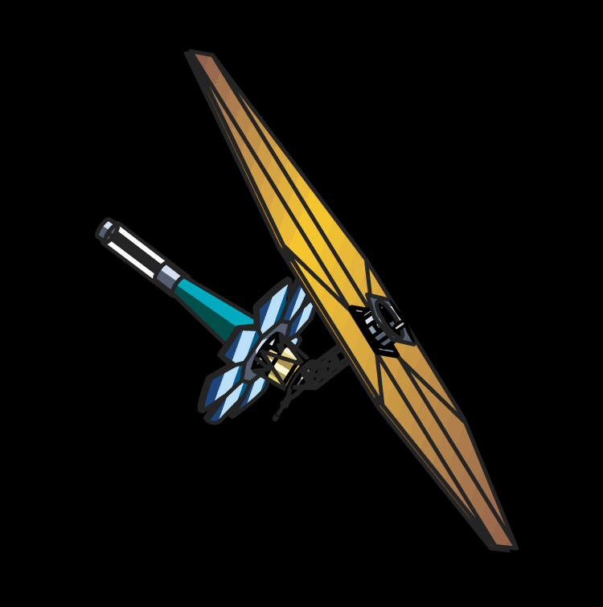
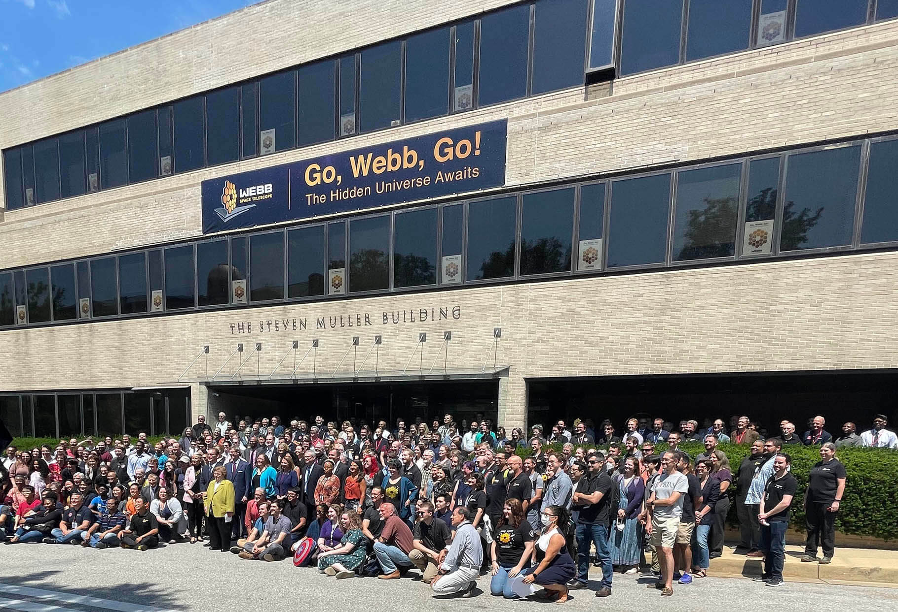
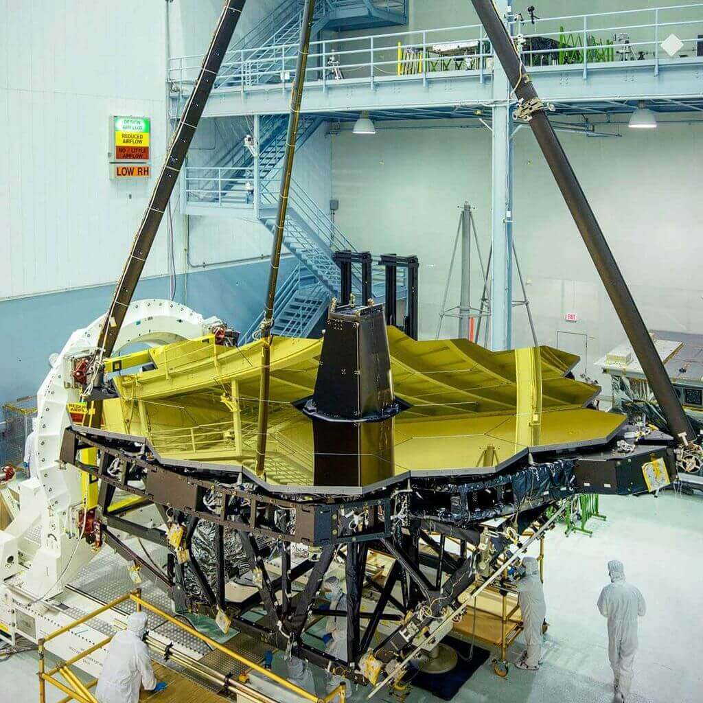
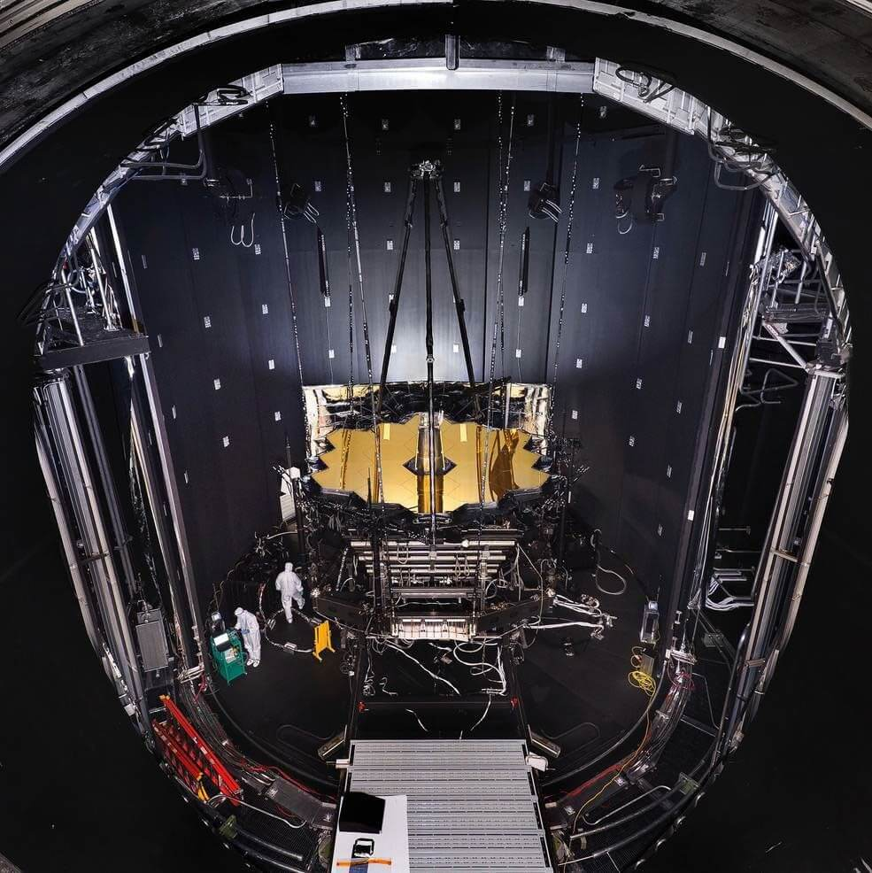
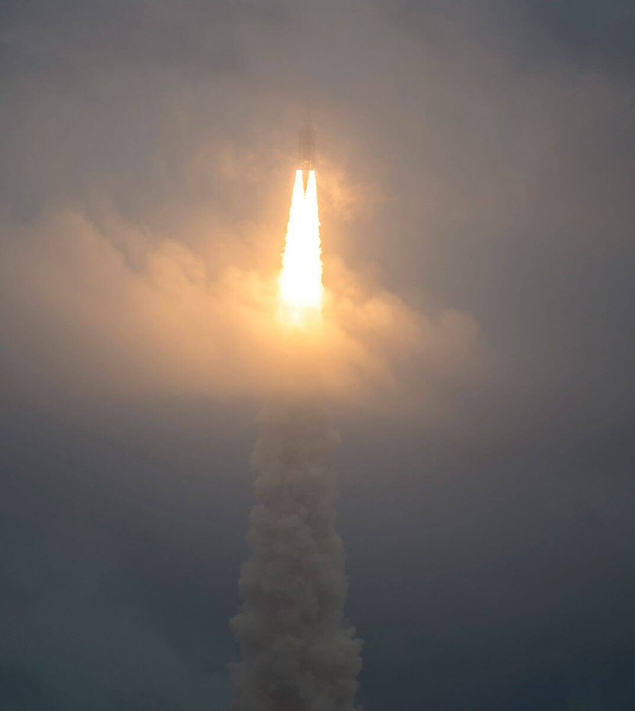
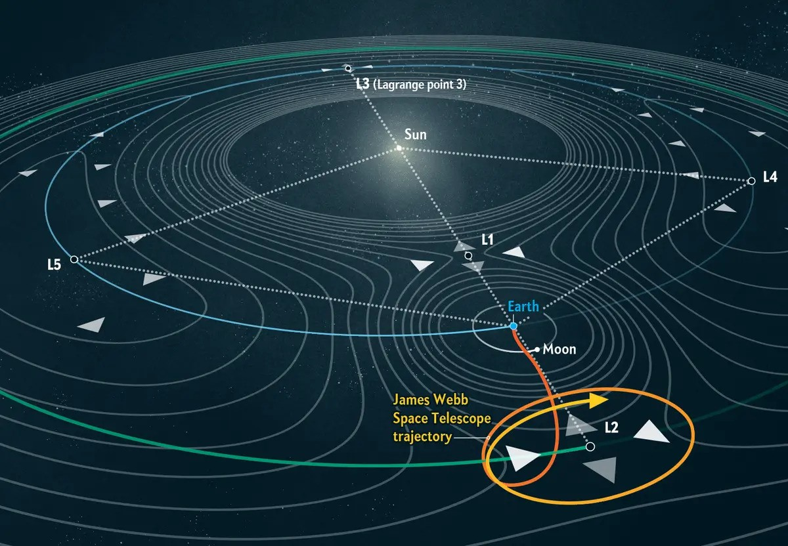
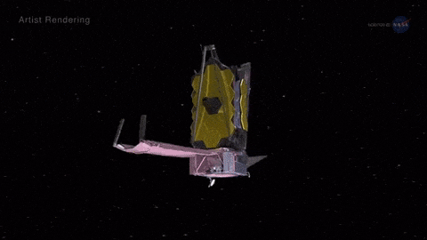
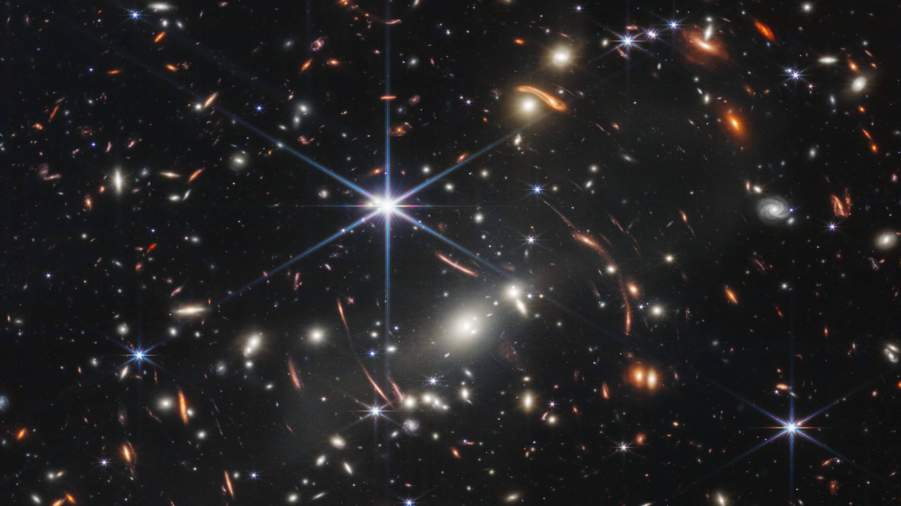

NIRCam
Webb’s primary imager, covering infrared wavelengths from 0.6 to 5 microns. NIRCam detects light from the earliest stars and galaxies and studies star formation in our own galaxy.
Journey through this page to learn more about the journey of the most powerful telescope ever sent to space.
The James Webb Space Telescope is the most powerful space observatory ever built. Positioned to explore the universe in unprecedented detail, it launched in 2021. It allows scientists to observe distant galaxies, study the formation of stars and planets, and search for signs of life beyond our solar system.
Webb has located at the L2 point, 1.5 million kilometres from Earth, keeping it far away from deep space.
Launch Date
Mission Lifetime
Distance from Earth
Primary Mirror Diameter
Operating Temperature
Mirror Segments
Sunshield Size
Total Mass
Science Instruments
Webb’s primary imager, covering infrared wavelengths from 0.6 to 5 microns. NIRCam detects light from the earliest stars and galaxies and studies star formation in our own galaxy.
Capable of observing 100 objects simultaneously, NIRSpec disperses light into spectra to determine physical properties like temperature, mass, and chemical composition.
Provides imaging and spectroscopy in mid-infrared wavelengths. MIRI reveals dust-obscured regions where stars and planets are forming, early forming stars, and bright comets.
Enables fine instrument line of sight during observations and conducts specialised exoplanet detection and characterisation studies.

Early concepts and engineering proposals were presented as space telescope specialists began imagining an infrared observatory.

A report recommended the telescope as NASA’s primary infrared space observatory, laying the foundation for development.

NASA began finalising scientific and technical systems, including the telescope’s mirror and sunshield structure.

Engineers assembled the telescope’s major components, combining mirrors, instruments, and the spacecraft bus.

The telescope was transported, prepared for launch, and launched on 25 December 2021 aboard an Ariane 5 rocket.

After a 29-day journey, the telescope reached its final position around L2, roughly 1.5 million kilometres from Earth.

Webb’s mirror segments were carefully aligned and calibrated, allowing the observatory to begin capturing sharp infrared data.

The first image is revealed. SMACS 0723, the deepest infrared view of the universe ever captured.
The Ariane 5 carrying the James Webb Space Telescope was launched from the Guiana Space Centre because its location near the equator provides a natural speed boost from Earth’s rotation, making launches more fuel-efficient and allowing heavier payloads to reach space. This site was also chosen by the European Space Agency as its primary spaceport, offering a reliable launch infrastructure and a clear, safe flight path over the Atlantic Ocean, reducing risk during ascent.